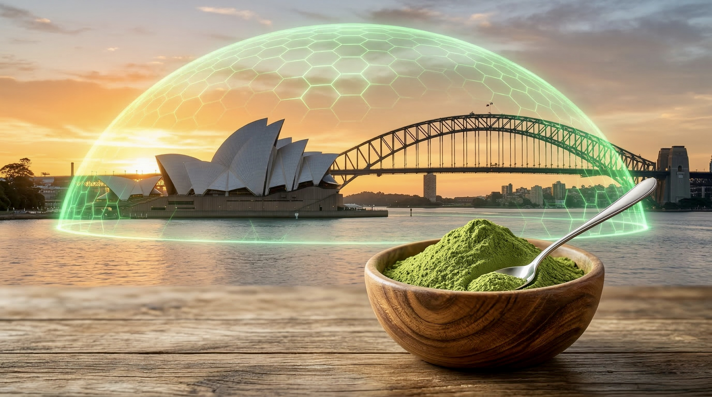
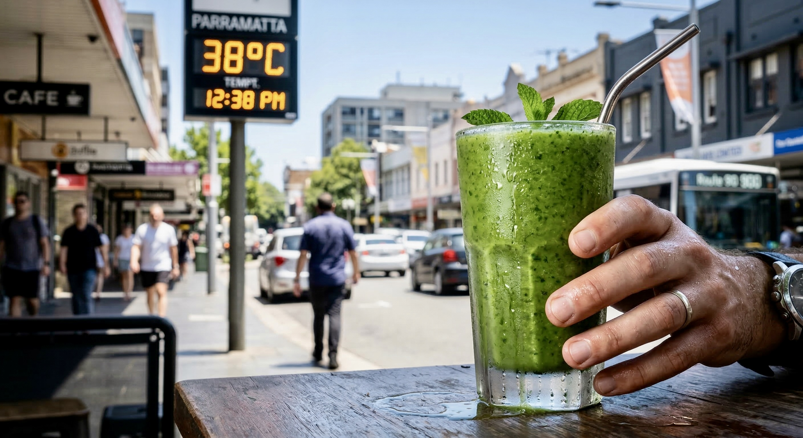

The Sydney Shield is Moringa Powder plus Darjeeling Black Tea plus Dried Curry Leaves for immune resilience, focus and environmental defence. Free shipping to Sydney postcodes. Use code SYDNEY2026.

Part 1: The 2026 Reckoning — Why Sydney is Exhausted
Sydney in 2026 is no longer just a city; it's a high-performance environment that demands a biological "survival strategy." As we move into mid-March, the Harbour City is grappling with a unique set of stressors. From the high-pressure boardrooms of the CBD to the record-breaking 35°C+ afternoons in Parramatta and Penrith, the "Sydney Office Body" has reached a breaking point.
The Rise of Psychosocial Hazards
In 2026, the Australian government and corporate sectors have officially recognised "psychosocial hazards" as a primary threat to workforce longevity. Burnout isn't just a mental state; it is a physiological breakdown of the nervous system. The constant exposure to blue light, urban noise, and the "always-on" digital culture of Sydney has led to a citywide epidemic of Nervous System Exhaustion.
The March 2026 Health Landscape
This month, NSW Health has issued multiple alerts regarding community-circulating viruses, including a significant measles surge in Western and Northern Sydney. This has placed Immune Resilience back at the top of the consumer priority list. Unlike the generic health trends of the early 2020s, the 2026 Sydney consumer is data-driven. They are moving away from synthetic multivitamins toward lab-tested, whole-food bio-actives that offer a verifiable "Shield" against the environment.
Lab-tested moringa, shipped from Melbourne to Sydney in 48–72 hours.
Buy NutriThrive Moringa Powder — 3+1 bundle $31.60 (was $37.18) →Part 2: The Science of the Gut-Brain Axis — Your Mental Health is Made in Your Gut
Definition: The Gut-Brain Axis (GBA) is the two-way communication between your gut and your brain. In 2026 we know the gut is often called the "Second Brain" because it produces the vast majority of the body's serotonin and about half of its dopamine.
One of the most profound shifts in 2026 is the mainstreaming of the Gut-Brain Axis (GBA). We now know that the gut is essentially the "Second Brain," responsible for the vast majority of our neurotransmitter production.
Serotonin: The CBD Professional's Secret Weapon
Recent 2026 clinical data confirms that approximately 90% of the body's serotonin and 50% of its dopamine are produced in the gut, specifically by the enteric nervous system and specialised gut bacteria such as Limosilactobacillus mucosae.
When a Sydney professional in Barangaroo or Martin Place experiences "brain fog" or chronic anxiety, it is often not a brain issue, but a gut inflammation issue. Urban pollution, microplastics in our water supply, and the sedentary "Office Body" lifestyle trigger systemic inflammation that travels through the Vagus Nerve directly to the brain.
NutriThrive Moringa acts as a potent prebiotic and anti-inflammatory agent. By reducing gut-lining inflammation, it supports the unhindered production of serotonin, effectively "cooling" the brain from the bottom up.
🛒 Buy Moringa Powder — 100g $10.50

Part 3: Moringa Oleifera — The "Miracle Tree" Reimagined for 2026
While Moringa has been used for centuries, NutriThrive's 2026 approach optimises its use for the modern Australian.
The Nutritional Maths of Moringa
To see why Moringa is replacing traditional greens in the Sydney diet, look at the concentration of bio-actives. In 2026, "Density-Per-Dollar" is the primary metric for the Sydney and Melbourne "Frugal Wellness" movement.
- Antioxidant activity: Moringa leaf powder has roughly 6–7× the antioxidant activity of spinach per serving.
- Vitamin C: Our fresh Moringa has about 7× the vitamin C of oranges by concentration.
That means more nutrition per scoop—and our 3+1 bundle (400g for $31.60) gives you months of daily servings at a lower cost per serve than most greens powders.
Lab-Tested Purity: The Microplastic Defence
A landmark January 2026 report by AUSMAP revealed that microplastic pollution in Sydney's waterways—including Manly Cove and Narrabeen Lagoon—has tripled in just three years. These particles are now found in human tissue, where they can act as endocrine disruptors.
NutriThrive is the only superfood provider shipping from our Melbourne warehouse that provides independent lab-tested purity reports for microplastic and heavy metal contamination. Our Moringa isn't just "organic"; it is biologically clean, providing the fibre and antioxidants that support your body's natural detoxification pathways (including the Nrf-2 signalling pathway).
Choose your Moringa format
All 100% vegan, gluten-free, lab-tested. Shipped from Truganina to Sydney in 48–72 hours.
- 3+1 = 400g — $31.60 (was $37.18) — best value
- 100g — $10.50 — try first
- Combo Moringa + Curry Leaves — $15.55
- Moringa + Soap 95g — $17.00 — inside-out routine
Part 4: Hyperlocal Strategy — Sydney's Three Wellness Zones
Sydney is not a monolith. Your health needs in Bondi are different from your needs in Blacktown.
1. Western Sydney: The Heat-Resilience Frontier
As urban heat-island effects intensify, Western Sydney residents are sweltering through an average of 10 extra days of extreme heat per year. This "Thermal Stress" diverts blood away from the gut to the skin for cooling, contributing to the "Sydney Summer Bloat."
The strategy: Moringa and Curry Leaves are rich in Quercetin, a flavonoid that helps stabilise mast cells and support metabolic cooling.
The routine: Add 1 tsp of NutriThrive Moringa to your morning smoothie to help protect your cells from oxidative damage before the 3 PM heat peak.
Buy Moringa for Western Sydney → | Buy Curry Leaves $6.45 →
2. Sydney CBD: The "Neurowellness" Hub
For the professional in the high-rises of Barangaroo or Martin Place, the main enemy is Cognitive Burnout.
The strategy: Swap the high-cortisol coffee habit for NutriThrive Darjeeling Black Tea.
The why: Black tea contains L-theanine, which, when paired with the natural minerals in Moringa, can support a calmer "flow state" without the jitters.
🛒 Buy Darjeeling Black Tea — $7.00
3. The Coastal Corridor: Microplastic & UV Defence
Living by the ocean in 2026 means higher exposure to airborne microplastics and intense UV radiation.
The strategy: Somatic detoxification.
The routine: Use our Moringa Soap to help strip urban pollutants from the skin, followed by a high-fibre Moringa diet to support the body's natural binding of toxins internally.
Buy Moringa Soap — from $6.50 → | Buy Moringa Powder →
Part 5: The "Office Body" Recovery Protocol
If you spend more than 6 hours a day sitting, you may be experiencing Metabolic Stagnation. This can lead to insulin resistance and "hidden" inflammation.
The 3-Step NutriThrive Reset:
- Step 1 — Morning (Activation): 1 tsp Moringa Powder in warm water. This primes the digestive enzymes needed to process the day's stressors.
- Step 2 — Midday (Cognitive Bridge): Darjeeling Black Tea. No sugar. Pure antioxidants to bridge the gap between morning focus and afternoon delivery.
- Step 3 — Evening (Somatic Reset): A short walk through one of Sydney's urban green spaces (e.g. Hyde Park, Barangaroo Reserve, or your local park), followed by a meal enriched with Dried Curry Leaves to support bone density and joint health after a day of sitting.
Start the 3-step reset today
Moringa · Black Tea · Curry Leaves — all in one place.
🛒 Get Moringa $10.50 Black Tea $7 Curry Leaves $6.45Part 6: Why NutriThrive is the 2026 Choice for Sydney
We don't just sell supplements; we sell Verified Healthspan.
- 100% Vegan & Gluten-Free — Essential for the 2026 "Clean Label" consumer.
- Fresh from Melbourne — While other brands ship month-old stock from international warehouses, our products ship from Truganina (3029), reaching Sydney doorsteps in 48–72 hours.
- 4.9-Star Community Trust — With 150+ verified reviews from real Australians (including Siv in Sydney and Sharita in Melbourne), our "Trust Moat" is built on results, not hype.
- 7-Day Money-Back Guarantee — Not satisfied? Full refund, no questions asked.
- Free shipping — Australia: free on orders $80+; Worldwide: free on orders $90+.
Pros of the Sydney Wellness Reset
Why this approach works for Sydney in 2026:
- Targets root causes — Gut-brain support and anti-inflammatory nutrition instead of symptom-only fixes.
- Zone-specific — Western Sydney heat, CBD burnout and coastal microplastics each have a clear strategy.
- Lab-tested purity — Microplastic and heavy metal testing meets data-driven consumer expectations.
- Simple 3-step routine — Morning moringa, midday tea, evening curry leaves and movement; no overwhelming protocols.
- Fast local delivery — Ships from Melbourne to Sydney in 48–72 hours; no month-old imported stock.
- Clean label — 100% vegan, gluten-free; 7-day money-back guarantee.
Frequently Asked Questions
How fast does NutriThrive ship to Sydney?
We ship from our Truganina (Melbourne) warehouse. Sydney metro postcodes typically receive orders in 48–72 hours. Free shipping on orders $80+ Australia-wide.
Is moringa good for Sydney's hot weather?
Yes. Moringa and curry leaves are rich in quercetin, which supports mast-cell stability and metabolic cooling. Adding 1 tsp moringa to your morning routine before Western Sydney's afternoon heat peak can help protect cells from oxidative stress.
Why is the gut-brain axis important for CBD professionals?
About 90% of serotonin and 50% of dopamine are produced in the gut. Brain fog and anxiety in desk workers are often linked to gut inflammation. Moringa acts as a prebiotic and anti-inflammatory, supporting serotonin production and calming the brain from the gut up.
Does NutriThrive test for microplastics and heavy metals?
Yes. NutriThrive moringa is independently lab-tested for microplastic and heavy metal contamination. We provide purity reports so you know you're getting biologically clean superfood—important for Sydney's coastal and urban environment.
What is the Sydney Shield Bundle?
The Sydney Shield is Moringa Powder + Darjeeling Black Tea + Dried Curry Leaves—our trio for immune resilience, cognitive focus and environmental defence. Use code SYDNEY2026 for Sydney residents. Free shipping to Sydney postcodes on qualifying orders.
How much moringa should I take daily in Sydney?
Start with 1 teaspoon (2–3 g) daily—e.g. in warm water in the morning or in a smoothie. You can increase to 1–2 tsp per day. Our 100g tub ($10.50) lasts roughly 1–2 months at 1 tsp/day.
Is NutriThrive moringa vegan and gluten-free?
Yes. All NutriThrive moringa is 100% vegan and gluten-free, meeting 2026 clean-label expectations for Sydney and NSW consumers.
Can I get NutriThrive delivered to Western Sydney or regional NSW?
Yes. We deliver Australia-wide including Parramatta, Penrith, Blacktown, Blue Mountains and regional NSW. Most Sydney and NSW orders arrive in 2–5 business days.
Why is moringa better than spinach for antioxidants?
By concentration, moringa leaf powder has roughly 6–7× the antioxidant activity of spinach and about 7× the vitamin C of oranges per serving—giving you more density per dollar, ideal for the Sydney "frugal wellness" mindset.
What's the best routine for Sydney office workers?
Morning: 1 tsp moringa in warm water to prime digestion. Midday: Darjeeling black tea (L-theanine + minerals) for focus without jitters. Evening: Meal with dried curry leaves for bone and joint support after sitting. Add a short walk in urban green space when possible.
Where can I buy lab-tested moringa in Sydney?
NutriThrive ships to all Sydney postcodes from our Melbourne warehouse. You can buy moringa powder online (100g from $10.50, 3+1 bundle $31.60) with fast delivery—no need to hunt in Sydney stores.
Is NutriThrive safe for athletes and gym-goers in Sydney?
Every batch of our moringa is lab-tested for purity and contaminants. We do not add stimulants or banned substances, making it a clean option for everyday training and active Sydney lifestyles.
Sources & References
This article draws on current understanding of the gut-brain axis, urban health and environmental factors. For transparency and E-E-A-T:
- Gut-brain axis & neurotransmitters — Enteric nervous system and gut microbiota in serotonin/dopamine production; widely cited in integrative and nutritional science (e.g. relevant reviews on gut-brain signalling).
- Psychosocial hazards — Safe Work Australia and Australian workplace health and safety guidance on psychosocial hazards and burnout (2024–2026).
- NSW Health — Community health alerts and viral surveillance (e.g. measles and respiratory viruses in NSW); check health.nsw.gov.au for current advisories.
- AUSMAP (Australian Microplastic Assessment Project) — Research on microplastic pollution in Australian waterways; January 2026 report on Sydney waterways cited in environmental and consumer health context.
- NutriThrive — Product information, lab-testing and shipping details from nutrithrive.com.au. We recommend consulting your healthcare provider before starting any new supplement routine.
🛡️ Join the Sydney Wellness Reset
Get your Sydney Shield: Moringa + Black Tea + Curry Leaves. Use code SYDNEY2026. Free shipping to Sydney postcodes. In stock — ships from Melbourne today.
Explore more: Best Moringa Powder Australia 2026 · Gut Health Superfoods Guide · Black Tea Benefits · Curry Leaves Uses & Benefits